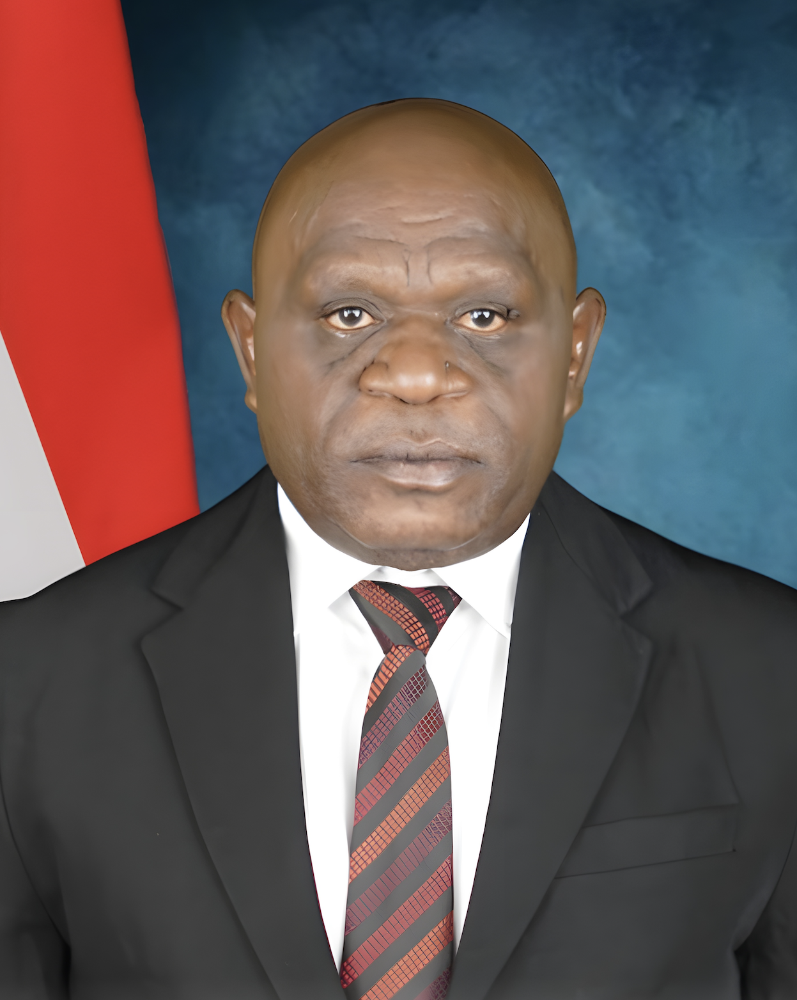

Natalius Pigai Soroti Tewasnya Tiga ASN di Papua, Ingatkan Perlindungan Warga Sipil

Kasus tewasnya tiga aparatur sipil negara (ASN) Dinas Pertanian Kabupaten Jayawijaya, Papua Pegunungan, menjadi perhatian nasional setelah mereka menjadi korban penembakan ketika sedang menjalankan tugas pelayanan kepada masyarakat.
Peristiwa tersebut terjadi pada Rabu, 9 September 2026, di Distrik Muliama, Kabupaten Jayawijaya, Papua Pegunungan. Ketiga korban merupakan bagian dari rombongan pegawai Dinas Pertanian yang sedang menjalankan kegiatan untuk menyalurkan bantuan kepada masyarakat.
Berdasarkan laporan ANTARA, rombongan tersebut sebelumnya melakukan perjalanan untuk mengantar bantuan pangan berupa ternak kepada masyarakat di Kampung Kimbim, Distrik Asologaima. Dalam perjalanan kembali menuju Wamena, rombongan tersebut kemudian diadang di wilayah Distrik Muliama. :contentReference[oaicite:1]{index=1}
Tiga ASN Menjadi Korban
Tiga korban yang meninggal dunia dalam peristiwa tersebut adalah Aprida Rapi, Alfonsius Albinus Meha, dan Willi Mbuik. Ketiganya merupakan pegawai pada Dinas Pertanian Kabupaten Jayawijaya yang sedang menjalankan tugas.
Berdasarkan keterangan yang diberitakan ANTARA, ketiga korban bersama sejumlah rekan mereka sedang melakukan perjalanan berkaitan dengan penyaluran bantuan ternak kepada masyarakat. Rombongan tersebut kemudian mengalami serangan di Distrik Muliama. :contentReference[oaicite:2]{index=2}
Peristiwa tersebut tidak hanya menimbulkan kehilangan bagi keluarga korban, tetapi juga menjadi perhatian terhadap keamanan para aparatur pemerintah yang menjalankan tugas pelayanan publik di wilayah yang memiliki tantangan keamanan.
Penyelidikan terhadap Penembakan
Setelah kejadian tersebut, aparat melakukan penyelidikan untuk mengetahui secara lebih jelas pihak yang bertanggung jawab atas penembakan. Aparat juga melakukan olah tempat kejadian perkara dan mengumpulkan barang bukti dari lokasi kejadian.
ANTARA melaporkan bahwa Satgas Operasi Damai Cartenz 2026 menemukan selongsong peluru kaliber 5,56 milimeter dan 9 milimeter di lokasi penembakan. Temuan tersebut menjadi bagian dari proses penyelidikan untuk mengungkap rangkaian kejadian dan pihak yang terlibat. :contentReference[oaicite:3]{index=3}
Pada tahap awal penyelidikan, aparat menyebut adanya dugaan keterlibatan kelompok bersenjata. Namun, proses pendalaman tetap dilakukan untuk memastikan kelompok maupun individu yang terlibat dalam peristiwa tersebut. :contentReference[oaicite:4]{index=4}
Kementerian HAM Mengecam Penembakan
Peristiwa tersebut mendapat perhatian dari Kementerian Hak Asasi Manusia Republik Indonesia. Kementerian HAM menyampaikan kecaman terhadap penembakan tiga warga sipil yang merupakan ASN Dinas Pertanian Kabupaten Jayawijaya.
Juru Bicara Kementerian HAM Thomas Harming Suwarta menyampaikan bahwa tindakan kekerasan terhadap warga sipil tidak dapat dibenarkan dan meminta agar kasus tersebut diusut secara tuntas. :contentReference[oaicite:5]{index=5}
Pernyataan tersebut menempatkan perlindungan masyarakat sipil sebagai salah satu persoalan penting dalam melihat perkembangan keamanan di Papua. Aparatur pemerintah yang sedang menjalankan tugas pelayanan kepada masyarakat juga merupakan bagian dari warga sipil yang perlu mendapatkan perlindungan.
Pernyataan Menteri HAM Natalius Pigai
Perhatian terhadap perlindungan warga sipil kembali disampaikan Menteri HAM Natalius Pigai pada Kamis, 17 September 2026. Dalam konferensi pers di Jakarta, Pigai mengingatkan seluruh pihak yang terlibat dalam konflik di Papua untuk mematuhi hukum perang dan hukum humaniter internasional. :contentReference[oaicite:6]{index=6}
Pigai menegaskan bahwa warga sipil tidak boleh dilibatkan dalam operasi militer maupun dijadikan sasaran kekerasan. Menurut pemberitaan ANTARA, ia mengaitkan pernyataan tersebut dengan perlindungan masyarakat sipil di tengah perkembangan konflik di Papua.
"Dalam hukum perang dan hukum humaniter, jangan sekali-kali melibatkan sipil di dalam operasi militer. Dilarang tegas."
Pernyataan tersebut menunjukkan perhatian Kementerian HAM terhadap posisi masyarakat sipil dalam situasi konflik. Pigai menyampaikan bahwa kondisi sosial dan demografis di Papua tidak dapat dijadikan alasan untuk melibatkan masyarakat sipil dalam operasi keamanan. :contentReference[oaicite:7]{index=7}
Warga Sipil Tidak Boleh Menjadi Sasaran
Selain mengingatkan aparat keamanan, Pigai juga menyampaikan pesan kepada kelompok bersenjata yang terlibat dalam konflik di Papua. Ia menegaskan bahwa warga sipil tidak boleh menjadi sasaran kekerasan.
Dalam pemberitaan ANTARA, Pigai menyatakan bahwa kelompok TPN-OPM juga tidak boleh membunuh warga sipil. Ia menolak alasan yang menjadikan tuduhan spionase atau kepentingan intelijen sebagai dasar untuk melakukan eksekusi terhadap warga sipil. :contentReference[oaicite:8]{index=8}
Pernyataan tersebut menjadi penting karena masyarakat sipil berada pada posisi yang rentan ketika terjadi konflik bersenjata. Masyarakat tetap membutuhkan rasa aman untuk menjalankan pekerjaan, pendidikan, aktivitas ekonomi, pelayanan publik, dan kehidupan sehari-hari.
Apa yang Dimaksud dengan Hukum Humaniter?
Hukum humaniter internasional merupakan seperangkat aturan yang mengatur perlindungan manusia dan pembatasan cara serta sarana dalam konflik bersenjata. Salah satu perhatian utama dalam hukum humaniter adalah perlindungan terhadap orang yang tidak atau tidak lagi terlibat secara langsung dalam permusuhan.
Dalam konteks pernyataan Menteri HAM, hukum humaniter digunakan sebagai dasar untuk menegaskan bahwa masyarakat sipil harus mendapatkan perlindungan. Karena itu, warga sipil tidak seharusnya dijadikan target kekerasan atau dilibatkan dalam kegiatan militer.
Prinsip perlindungan warga sipil menjadi semakin penting ketika konflik terjadi di wilayah yang masyarakatnya tetap menjalankan kegiatan pemerintahan dan pelayanan publik.
Dampak terhadap Pelayanan kepada Masyarakat
Tewasnya tiga pegawai Dinas Pertanian Jayawijaya juga memperlihatkan bahwa persoalan keamanan memiliki hubungan dengan keberlangsungan pelayanan publik. Para ASN tersebut sedang menjalankan kegiatan yang berkaitan dengan bantuan kepada masyarakat ketika mereka menjadi korban.
Keamanan menjadi salah satu faktor penting agar pegawai pemerintah dapat menjalankan tugasnya dengan baik. Ketika kondisi keamanan terganggu, distribusi bantuan, pelayanan administrasi, pembangunan, pendidikan, kesehatan, dan berbagai kegiatan pemerintahan dapat menghadapi tantangan.
Oleh karena itu, perlindungan terhadap pekerja pelayanan publik menjadi bagian penting dalam memastikan masyarakat tetap mendapatkan pelayanan meskipun berada di wilayah yang menghadapi persoalan keamanan.
Dorongan agar Kasus Diusut Tuntas
Selain Kementerian HAM, sejumlah pihak juga menyampaikan perhatian terhadap kasus tersebut. Komisi I DPR RI meminta penembakan tiga ASN Jayawijaya diusut secara tuntas, termasuk mengungkap pihak yang bertanggung jawab atas serangan tersebut. :contentReference[oaicite:9]{index=9}
Komisi IV DPR RI juga menyampaikan penghormatan terhadap ketiga ASN yang meninggal ketika menjalankan tugas menyalurkan bantuan kepada masyarakat. Pernyataan tersebut disampaikan dalam konteks penghargaan terhadap pengabdian mereka sebagai aparatur pemerintah. :contentReference[oaicite:10]{index=10}
Sementara itu, Persekutuan Gereja-Gereja di Indonesia atau PGI menyerukan agar warga sipil di Tanah Papua memperoleh perlindungan dan tidak dijadikan sasaran maupun instrumen dalam konflik bersenjata. :contentReference[oaicite:11]{index=11}
Pigai Dorong Penyelesaian Secara Holistik
Selain berbicara mengenai perlindungan warga sipil, Natalius Pigai juga menyampaikan bahwa persoalan konflik di Papua tidak cukup diselesaikan hanya berdasarkan kasus per kasus.
Menurut Pigai, pemerintah perlu menggunakan pendekatan yang lebih menyeluruh atau holistik dalam menangani persoalan Papua. Ia juga menyebut perlunya kebijakan afirmatif sebagai bagian dari upaya untuk mewujudkan perdamaian. :contentReference[oaicite:12]{index=12}
Pendekatan tersebut menempatkan persoalan keamanan, perlindungan hak asasi manusia, kondisi sosial, serta pembangunan sebagai bagian yang saling berkaitan. Dengan demikian, pembahasan mengenai konflik Papua tidak hanya berkaitan dengan aspek keamanan, tetapi juga mengenai bagaimana masyarakat sipil dapat hidup dan memperoleh pelayanan secara aman.
Pentingnya Pengungkapan Fakta
Dalam kasus penembakan tiga ASN Jayawijaya, proses penyelidikan menjadi bagian penting untuk memastikan fakta mengenai kejadian tersebut. Identitas korban dan lokasi kejadian telah diberitakan oleh sejumlah media nasional, sementara pihak yang bertanggung jawab tetap menjadi bagian dari proses penyelidikan aparat.
Karena itu, informasi mengenai pelaku maupun motif perlu disampaikan berdasarkan hasil penyelidikan dan bukti yang dapat dipertanggungjawabkan. Hal tersebut penting agar pemberitaan tidak menimbulkan tuduhan yang belum terbukti.
Transparansi dalam proses hukum juga dapat memberikan kepastian kepada keluarga korban sekaligus membantu masyarakat memahami perkembangan kasus secara lebih objektif.
Penutup
Tewasnya tiga ASN Dinas Pertanian Kabupaten Jayawijaya di Papua Pegunungan menjadi perhatian karena ketiga korban meninggal ketika sedang menjalankan tugas pelayanan kepada masyarakat. Peristiwa tersebut kemudian mendapat perhatian dari berbagai pihak, termasuk Kementerian HAM.
Menteri HAM Natalius Pigai menegaskan bahwa seluruh pihak yang terlibat dalam konflik di Papua harus mematuhi hukum perang dan hukum humaniter internasional. Ia juga mengingatkan agar masyarakat sipil tidak dilibatkan dalam operasi militer dan tidak dijadikan sasaran kekerasan. :contentReference[oaicite:13]{index=13}
Pernyataan tersebut memperlihatkan bahwa perlindungan masyarakat sipil menjadi salah satu persoalan penting dalam penanganan konflik di Papua. Di sisi lain, proses penyelidikan terhadap penembakan tiga ASN tetap diperlukan untuk mengungkap fakta dan pihak yang bertanggung jawab.
Kasus ini juga menunjukkan pentingnya keamanan bagi aparatur pemerintah dan masyarakat yang menjalankan aktivitas sehari-hari. Pelayanan kepada masyarakat membutuhkan kondisi yang aman agar program pemerintah dapat berjalan dan masyarakat tetap memperoleh hak-haknya.
Pemerintah, aparat keamanan, lembaga HAM, dan seluruh pihak terkait memiliki peran dalam memastikan perlindungan masyarakat sipil serta penegakan hukum. Perkembangan kasus ini selanjutnya tetap perlu mengikuti hasil penyelidikan dan informasi resmi dari pihak yang berwenang.
Sumber Berita Nasional
Artikel ini disusun berdasarkan pemberitaan media nasional dan sumber yang dapat diakses publik. Untuk membaca informasi lengkap dari sumber asli, pembaca dapat mengunjungi tautan berikut.
1. ANTARA News
Menteri HAM ingatkan aparat dan OPM patuhi
hukum humaniter.
2. ANTARA News
Profil tiga pegawai Dinas Pertanian Jayawijaya
yang tewas ditembak.
3. ANTARA News
Komisi I DPR meminta penembakan ASN Jayawijaya
diusut tuntas.
4. ANTARA News
Komisi IV DPR menghormati tiga ASN pertanian
yang gugur di Jayawijaya.